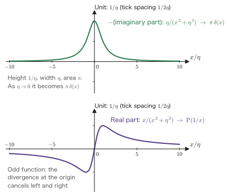

Chapter 5Complex Analysis and the Residue Theorem — For Readers in Engineering
In the four chapters so far, the backbone of linear response theory has nearly taken shape. A response becomes a convolution integral (Chapter 1); after a Fourier transform it becomes a multiplication (Chapter 1); the retarded Green's function of the damped oscillator has two poles in the lower half-plane of the complex $\omega$ plane (Chapter 2); causality is the same thing as analyticity in the upper half-plane (Chapter 4); and from this the Kramers–Kronig relations follow.
However, we have not yet explained the tools we used there—“poles,” “residues,” “closing in the upper half-plane,” and “principal-value integrals.” Because students in engineering often do not take complex analysis in their curriculum, the calculation by which we obtained $G^R(\tau)$ in Chapter 2 probably looked like nothing more than a magic trick. This chapter reveals how the trick is done.
Let us make our approach clear. This chapter is not a mathematics textbook. Its aim is not to cover rigorous proofs exhaustively but to enable you to compute, with your own hands, the integrals that actually appear in linear response theory. We therefore give proofs only “to the extent needed in order to use the results,” and in return we have included as many worked examples as possible. Starting from the polar form of a complex number, we finally reach the point of deriving $G^R(t)$ of Chapter 2 on our own with the residue theorem and seeing “causality come out automatically.”
Readers who already know complex analysis need only read Section 5.9 (Jordan's lemma), Section 5.10(d) (derivation of $G^R$), and Section 5.11 (the Sokhotski–Plemelj formula).
- The polar form $z=r\ee^{\ii\theta}$ of a complex number, and why using complex numbers makes calculations easier in physics
- Differentiation of complex functions and the Cauchy–Riemann equations, and the meaning of “analytic (holomorphic)”
- The definition of complex integrals, and $\oint \dd z/z = 2\pi\ii$, the starting point of everything
- Cauchy's integral theorem (if a function is analytic, its contour integral vanishes) and the freedom to deform the contour
- Cauchy's integral formula, Taylor expansion, Laurent expansion, and the classification of isolated singularities
- How to compute residues (simple poles, poles of order $n$, and the $P/Q$ form) and the residue theorem
- Jordan's lemma, and the iron rule of linear response: “close in the lower half-plane if $t>0$ and in the upper half-plane if $t<0$”
- Application to real integrals, in particular the complete derivation of $G^R(t)$ of Chapter 2
- Principal-value integrals and the Sokhotski–Plemelj formula $\displaystyle\lim_{\eta\to0^+}\frac{1}{x\pm\ii\eta}=\PV\frac{1}{x}\mp\ii\pi\delta(x)$
- Multivalued functions (the logarithm and the square root) and the minimal cautions needed about branch cuts
5.1 Review of Complex Numbers — Why Do We Use Them in Physics?
5.1.1 The complex plane and polar form
A complex number $z=x+\ii y$ ($\ii^2=-1$) is a pair of two real numbers, so it corresponds one-to-one to a point in a plane. We call this plane the complex plane, and we call the horizontal axis the real axis and the vertical axis the imaginary axis. We call $x=\mathrm{Re}\,z$ the real part and $y=\mathrm{Im}\,z$ the imaginary part (note that the imaginary part is $y$, not $\ii y$). The complex conjugate is $\bar z\equiv x-\ii y$ (in physics it is also written $z^*$), and the absolute value is $\abs{z}=\sqrt{x^2+y^2}$. In fact, since $z\bar z=(x+\ii y)(x-\ii y)=x^2-(\ii y)^2=x^2+y^2$, we have $\abs{z}^2=z\bar z$.
In linear response theory, it becomes crucially important to distinguish the upper half ($\mathrm{Im}\,z>0$) of this plane from the lower half ($\mathrm{Im}\,z<0$). What we stated in Chapter 1, Section 1.4, as “causality $\Longleftrightarrow$ analyticity in the upper half-plane” is exactly this.
A point in the plane can also be specified by polar coordinates $(r,\theta)$. Setting $x=r\cos\theta$, $y=r\sin\theta$ and using Euler's formula
we can write
This is the polar form, and $\theta$ is called the argument. The argument has an ambiguity of integer multiples of $2\pi$, and this is the source of the multivaluedness discussed in Section 5.12.
Derivation: Euler's formula
We may think of the exponential function of a complex number as being defined by the series $\ee^{s}=\sum_{n\ge0}s^n/n!$. Substituting $s=\ii\theta$ gives
$$ \ee^{\ii\theta} = \sum_{n=0}^{\infty}\frac{\ii^n\theta^n}{n!} $$For $n=0,1,2,3,\dots$, $\ii^n$ repeats with period four as $1,\ii,-1,-\ii,1,\dots$. So we split the sum into the even terms $n=2k$ and the odd terms $n=2k+1$. Since $\ii^{2k}=(\ii^2)^k=(-1)^k$ and $\ii^{2k+1}=\ii(-1)^k$, we have
$$ \ee^{\ii\theta} = \underbrace{\sum_{k=0}^{\infty}\frac{(-1)^k\theta^{2k}}{(2k)!}}_{\cos\theta} + \ii\underbrace{\sum_{k=0}^{\infty}\frac{(-1)^k\theta^{2k+1}}{(2k+1)!}}_{\sin\theta} $$∎ The real part is exactly the Taylor series of $\cos\theta$, and the imaginary part is exactly the Taylor series of $\sin\theta$.
5.1.2 Why complex numbers make physics easier
In polar form the product becomes $z_1z_2=r_1r_2\ee^{\ii(\theta_1+\theta_2)}$; that is, absolute values multiply and arguments add. Multiplying by $\ee^{\ii\theta}$ is the operation of “rotating by the angle $\theta$ about the origin,” and multiplying by $\ii$ is a rotation by $90^\circ$ ($\ii=\ee^{\ii\pi/2}$). This view as a “rotation” underlies all the calculations that follow.
Three situations in which complex numbers pay off
(1) Differentiation becomes multiplication. Differentiating $\cos\omega t$ gives $-\omega\sin\omega t$, so the type of function changes. By contrast, $\dfrac{\dd}{\dd t}\ee^{-\ii\omega t}=-\ii\omega\,\ee^{-\ii\omega t}$ is just the original function multiplied by a constant. Hence a differential equation turns into an algebraic equation. In Chapter 2, the fact that $m\ddot{G}+\gamma\dot{G}+kG=\delta(t)$ (the defining equation of the Green's function) became the single line $\left[-m\omega^2-\ii\gamma\omega+k\right]G(\omega)=1$ is entirely thanks to this property.
(2) Amplitude and phase combine into a single number. A real external force $F(t)=F_0\cos(\omega t+\varphi)$ carries two pieces of information, an “amplitude” and a “phase.” If we write $F(t)=\mathrm{Re}\left[\tilde F\ee^{-\ii\omega t}\right]$ with $\tilde F=F_0\ee^{-\ii\varphi}$, both are contained in the single complex amplitude $\tilde F$. This is also the meaning of the fact that the complex susceptibility $\chi(\omega)$ of Chapter 3 is a complex number: $\abs{\chi}$ gives the magnitude of the response, and $\arg\chi$ gives the phase lag behind the external force.
(3) Integrals that cannot be done with real numbers can be done (the theme of this chapter). Integrals such as $\displaystyle\int_{-\infty}^{\infty}\frac{\cos ax}{x^2+b^2}\dd x$ and $\displaystyle\int_0^{\infty}\frac{\sin x}{x}\dd x$ are hopeless as long as we think only on the real axis. But if we “step out” into the complex plane and choose the integration contour anew, they are obtained in an instant by computing residues alone. Acquiring this technique is the goal of this chapter.
5.2 Differentiation of Complex Functions and the Cauchy–Riemann Equations
5.2.1 Definition of the derivative — the value must be the same from every direction
A rule that assigns a complex number $w=f(z)$ to a complex number $z$ is called a complex function. Writing $z=x+\ii y$ and $w=u+\ii v$, a complex function is in effect
$$ \begin{equation} f(z) = u(x,y) + \ii\,v(x,y) \label{eq:5-uv} \end{equation} $$a “pair of two real functions of two real variables.” For example, if $f(z)=z^2=(x+\ii y)^2=x^2-y^2+2\ii xy$, then $u=x^2-y^2$ and $v=2xy$. Up to this point it is merely a rewriting. Things become interesting when we define “differentiation.”
Definition: The complex derivative and analyticity
A complex function $f$ is said to be differentiable at a point $z_0$ if the limit
$$ \begin{equation} f'(z_0) \equiv \lim_{\Delta z\to0}\frac{f(z_0+\Delta z)-f(z_0)}{\Delta z} \label{eq:5-cderiv} \end{equation} $$exists. Here $\Delta z$ is a complex number.
When $f$ is differentiable at all points of some neighborhood of $z_0$, $f$ is said to be analytic (holomorphic, also called regular) at $z_0$. If it is analytic at every point of a domain $D$, we say “analytic in $D$.” Note that “differentiable only at $z_0$” is not called analytic.
Why is this definition such a strong requirement?
For differentiation of a real function, there are only two ways of taking $\Delta x\to0$: “from the right” and “from the left.” For complex numbers, however, $\Delta z$ is a point in the plane, so the ways of taking $\Delta z\to0$ include every direction and every curved path. Eq. \eqref{eq:5-cderiv} demands that the same limit value be obtained for all of them.
This is a far stronger requirement than real differentiation, and in return, complex-differentiable functions have surprisingly good properties. If a function can be differentiated once, it can be differentiated any number of times; its Taylor expansion always converges; and the values on the boundary alone determine all the values in the interior (Section 5.5). That is why this property has been given the dedicated name “analytic.”
5.2.2 Derivation of the Cauchy–Riemann equations
Derivation: The Cauchy–Riemann equations
We translate the requirement “the same value from every direction” into the language of $u,v$. There are infinitely many directions, but in fact, as long as the partial derivatives of $u,v$ are continuous, agreement in two directions is sufficient (the remaining directions follow from the continuity of the partial derivatives; we come back to this sufficient condition after the derivation).
Step 1: Approaching along the real axis. Taking $\Delta z = h$ ($h$ real, $h\to0$), we have
$$ f'(z_0)=\lim_{h\to0}\frac{f(x_0+h+\ii y_0)-f(x_0+\ii y_0)}{h} $$The numerator is $\left[u(x_0+h,y_0)-u(x_0,y_0)\right]+\ii\left[v(x_0+h,y_0)-v(x_0,y_0)\right]$. Dividing by $h$ and letting $h\to0$, we obtain precisely the definition of the partial derivative with respect to $x$, so
$$ \begin{equation} f'(z_0) = \frac{\partial u}{\partial x} + \ii\frac{\partial v}{\partial x} \label{eq:5-crx} \end{equation} $$Step 2: Approaching along the imaginary axis. This time we take $\Delta z = \ii h$. Note that the denominator becomes $\ii h$:
$$ f'(z_0)=\lim_{h\to0}\frac{f(x_0+\ii(y_0+h))-f(x_0+\ii y_0)}{\ii h} $$The numerator is $\left[u(x_0,y_0+h)-u(x_0,y_0)\right]+\ii\left[v(x_0,y_0+h)-v(x_0,y_0)\right]$, and dividing by $h$ gives a partial derivative with respect to $y$. Multiplying further by $1/\ii=-\ii$ (because $1/\ii=\ii/\ii^2=\ii/(-1)=-\ii$), we obtain
$$ \begin{equation} f'(z_0) = \frac{1}{\ii}\left(\frac{\partial u}{\partial y}+\ii\frac{\partial v}{\partial y}\right) = \frac{\partial v}{\partial y} - \ii\frac{\partial u}{\partial y} \label{eq:5-cry} \end{equation} $$Step 3: Equating the two. Since Eq. \eqref{eq:5-crx} and Eq. \eqref{eq:5-cry} both give the same $f'(z_0)$, the real parts must be equal to each other and the imaginary parts must be equal to each other:
∎ These are the Cauchy–Riemann equations (hereafter the CR equations).
The derivation just given has shown only that “if the function is differentiable, then the CR equations hold” (the necessary condition). Conversely, “if the partial derivatives of $u,v$ are continuous and satisfy the CR equations, then the function is differentiable” (the sufficient condition) also holds. In practice, we may use the CR equations to test analyticity.
5.2.3 Checking with concrete examples
Example 5.1: $f(z)=z^2$ is analytic
We write out all the partial derivatives of $u=x^2-y^2$, $v=2xy$:
$$ \partial_x u=2x,\quad \partial_y u=-2y,\quad \partial_x v=2y,\quad \partial_y v=2x $$First equation: $\partial_x u=2x$ and $\partial_y v=2x$. They agree. Second equation: $\partial_y u=-2y$ and $-\partial_x v=-2y$. They agree. Therefore $z^2$ is analytic on the entire complex plane. From Eq. \eqref{eq:5-crx}, the derivative is
$$ f'(z)=\partial_x u + \ii\,\partial_x v = 2x+\ii\,2y = 2(x+\ii y) = 2z $$We obtain $(z^2)'=2z$, the same as for real functions. ∎
Example 5.2: $f(z)=\bar{z}$ is nowhere analytic
Since $\bar z=x-\ii y$, we have $u=x$ and $v=-y$, hence $\partial_x u=1$ and $\partial_y v=-1$. The first CR equation becomes $1=-1$, which does not hold.
Let us verify this directly by returning to the definition. Approaching along the real axis, $\Delta z=h$ (real), we obtain
$$ \frac{\overline{z_0+h}-\bar{z_0}}{h} = \frac{\bar h}{h} = \frac{h}{h} = 1 $$Approaching along the imaginary axis, $\Delta z=\ii h$, we obtain
$$ \frac{\overline{z_0+\ii h}-\bar{z_0}}{\ii h} = \frac{\overline{\ii h}}{\ii h}=\frac{-\ii h}{\ii h} = -1 $$Different values, $+1$ and $-1$, came out depending on the direction. Since the limit does not exist, the function is not differentiable. ∎
This example is worth remembering. If $\bar z$, $\abs{z}$, or $\mathrm{Re}\,z$ appears in an expression, that function is not analytic, and the residue theorem cannot be used. Conversely, an expression written in terms of $z$ alone is usually analytic.
Example 5.3: $f(z)=1/z$ is analytic except at the origin
Since $\dfrac{1}{z}=\dfrac{\bar z}{z\bar z}=\dfrac{x-\ii y}{x^2+y^2}$, writing $\rho^2\equiv x^2+y^2$ we have $u=x\rho^{-2}$ and $v=-y\rho^{-2}$. By the quotient rule,
$$ \partial_x u = \frac{\rho^2-x\cdot 2x}{\rho^4}=\frac{y^2-x^2}{\rho^4}, \qquad \partial_y v = \frac{-\rho^2+y\cdot 2y}{\rho^4}=\frac{y^2-x^2}{\rho^4} $$so the first equation holds. The second equation also holds: from $\partial_y u=x(-2y)\rho^{-4}=-2xy/\rho^4$ and $\partial_x v=-y(-2x)\rho^{-4}=+2xy/\rho^4$, we get $\partial_y u=-\partial_x v$. Hence $1/z$ is analytic for $z\neq0$, with $f'(z)=-1/z^2$ (the same as for the real function).
At the origin $z=0$ the function itself is not defined. Such a point is called a singularity. The main player in the residue theorem is precisely this singularity. ∎
Practical criteria
Checking the CR equations every time is tedious. In practice, we may remember the following.
- Polynomials, $\ee^z$, $\sin z$, and $\cos z$ are analytic on the entire complex plane (such functions are called entire functions).
- A rational function $P(z)/Q(z)$ is analytic except at the points where $Q(z)=0$. Sums, products, and compositions of analytic functions are also analytic.
- Expressions containing $\bar z$, $\abs{z}$, $\mathrm{Re}\,z$, $\mathrm{Im}\,z$, or $\arg z$ are not analytic.
The functions that appear in linear response theory, for example $G(\omega)=\left[-m\omega^2-\ii\gamma\omega+k\right]^{-1}$ of Chapter 2 and the like, are all either rational functions of $\omega$ or such functions multiplied by $\ee^{-\ii\omega t}$. So we may conclude at once that they are “analytic except at the points where the denominator vanishes (the poles).”
5.3 Definition of Complex Integrals and $\oint\dd z/z=2\pi\ii$
For the integral of a real function, $\int_a^b f(x)\dd x$, the only “path” of integration is an interval on the real axis. On the complex plane there are infinitely many paths from a point $A$ to a point $B$. Therefore a complex integral has meaning only once a path (contour of integration) is specified.
Definition: Complex line integral
Represent a curve $C$ on the complex plane as $z=z(t)$ with a parameter $t\in[a,b]$. Then we define
$$ \begin{equation} \int_C f(z)\,\dd z \equiv \int_a^b f\bigl(z(t)\bigr)\,\frac{\dd z}{\dd t}\,\dd t \label{eq:5-lineint} \end{equation} $$The right-hand side is “the integral of a complex-valued function of one real variable,” and we only need to split it into its real and imaginary parts and integrate each in the usual way. An integral along a closed curve is written $\displaystyle\oint_C$, and the orientation is taken to be positive when counterclockwise.
The sign from the orientation — it will certainly matter later
If we go around clockwise, the integral is multiplied by $-1$. This is because reversing the direction of the parameter changes the sign of $\dd z/\dd t$, just as $\int_a^b=-\int_b^a$ for real integrals.
This sign is decisive in Section 5.10(d). For $t>0$ we close the contour in the lower half-plane, and the direction of travel is then clockwise, so we obtain $-2\pi\ii$ rather than $2\pi\ii$. If we get the sign wrong here, the sign of $G^R(t)$ is reversed, and we obtain the impossible result of “an oscillator that emits energy instead of absorbing it.”
Example 5.4: $\oint \dfrac{\dd z}{z}$ along a circle (the most important calculation in this chapter)
Let the contour $C$ be the circle of radius $R$ centered at the origin, traversed once counterclockwise. We obtain the parametrization from the polar form, Eq. \eqref{eq:5-polar}, by fixing $r=R$ and sweeping the argument:
$$ z(\theta) = R\,\ee^{\ii\theta},\qquad \theta:0\to2\pi $$Step 1: Computing $\dd z$. Differentiating with respect to $\theta$, we get
$$ \frac{\dd z}{\dd\theta} = \ii R\,\ee^{\ii\theta} \quad\Longrightarrow\quad \dd z = \ii R\,\ee^{\ii\theta}\,\dd\theta $$Step 2: Computing the integrand. $\dfrac{1}{z}=\dfrac{1}{R\ee^{\ii\theta}}=\dfrac{1}{R}\ee^{-\ii\theta}$.
Step 3: Multiplying and integrating.
$$ \oint_C\frac{\dd z}{z} = \int_0^{2\pi}\frac{1}{R}\ee^{-\ii\theta}\cdot \ii R\,\ee^{\ii\theta}\,\dd\theta = \ii\int_0^{2\pi}\ee^{-\ii\theta+\ii\theta}\,\dd\theta = \ii\int_0^{2\pi}\dd\theta $$∎ Let us note that $R$ dropped out completely along the way. Regardless of the radius, the answer is always $2\pi\ii$.
This $2\pi\ii$ is the whole of this chapter
The theorems that come next—Cauchy's integral theorem, the integral formula, and the residue theorem—are all restatements or extensions of Eq. \eqref{eq:5-twopii}. The $2\pi\ii$ in the residue theorem, the $1/\pi$ in the Kramers–Kronig relations, and the $\ii\pi$ in the Sokhotski–Plemelj formula all come, when traced back to their origin, from this single calculation.
Why did $2\pi\ii$ come out? As we go once around the circle, $\dd z$ grows in proportion to $z$, while $1/z$ shrinks in inverse proportion to $z$. The two cancel, the integrand element becomes the constant $\ii\,\dd\theta$, and adding it up over one full turn gives $2\pi\ii$. The essence is “the angle of one full turn”; the size of the circle does not matter. This property is what justifies, in the next section, our freedom to deform the contour at will.
Example 5.5: $\oint z^n\dd z$ ($n$ is an integer)
Integrate $z^n$ along the same circle. Since $z^n=R^n\ee^{\ii n\theta}$ and $\dd z=\ii R\ee^{\ii\theta}\dd\theta$,
$$ \oint_C z^n\,\dd z = \int_0^{2\pi} R^n\ee^{\ii n\theta}\cdot\ii R\,\ee^{\ii\theta}\,\dd\theta = \ii R^{n+1}\int_0^{2\pi}\ee^{\ii(n+1)\theta}\,\dd\theta $$Letting $m\equiv n+1$, what remains is $\int_0^{2\pi}\ee^{\ii m\theta}\dd\theta$. If $m\neq0$,
$$ \int_0^{2\pi}\ee^{\ii m\theta}\dd\theta =\left[\frac{\ee^{\ii m\theta}}{\ii m}\right]_0^{2\pi} =\frac{\ee^{2\pi\ii m}-1}{\ii m}=\frac{1-1}{\ii m}=0 $$(Since $m$ is an integer, $\ee^{2\pi\ii m}=\cos2\pi m+\ii\sin2\pi m=1$.) Only for $m=0$, that is, $n=-1$, does the integrand become $1$, giving $\int_0^{2\pi}\dd\theta=2\pi$; together with the prefactor $\ii R^{n+1}=\ii$, this gives $2\pi\ii$. To summarize,
∎
Eq. \eqref{eq:5-zn} is what the residue really is
When we integrate an integer power $z^n$ once around the circle, only the $n=-1$ term survives, and all the others vanish. Therefore, if we can expand a function in the series
$$ f(z)=\dots+a_{-2}z^{-2}+a_{-1}z^{-1}+a_0+a_1z+\dots $$(this is the Laurent expansion, Section 5.6), then integrating term by term gives
$$ \oint f(z)\dd z = 2\pi\ii\,a_{-1} $$and the answer is determined by the single coefficient $a_{-1}$. This $a_{-1}$ is called the residue (the word means “what is left over”). We will define it formally in Section 5.7, but its true nature is already visible here and now. You may regard the discussion that follows as the work of putting this fact into a usable form.
Theorem: ML inequality (estimating the magnitude of an integral)
Let $L$ be the length of the curve $C$ and let $M$ be the maximum of $\abs{f(z)}$ on $C$. Then
$$ \begin{equation} \abs{\int_C f(z)\,\dd z} \le M L \label{eq:5-ML} \end{equation} $$Proof. From the definition, Eq. \eqref{eq:5-lineint}, and the fact that “the absolute value of an integral is at most the integral of the absolute value,” we have
$$ \abs{\int_a^b f(z(t))z'(t)\dd t}\le\int_a^b\abs{f}\abs{z'(t)}\dd t\le M\int_a^b\abs{z'(t)}\dd t=ML $$The last equality holds because $\abs{z'(t)}\dd t=\sqrt{\dot x^2+\dot y^2}\,\dd t=\dd s$ is the line element, that is, because $\int\abs{z'}\dd t$ is the length of the curve. ∎
Example 5.6: How to use the ML inequality
Show that the integral of $f(z)=\dfrac{1}{1+z^2}$ along the semicircle $C_R$ (of radius $R$) in the upper half-plane tends to zero as $R\to\infty$.
Solution. On $C_R$ we have $\abs{z}=R$, so the triangle inequality $\abs{1+z^2}\ge\abs{z^2}-1=R^2-1$ gives $M\le1/(R^2-1)$. The length of the semicircle is $L=\pi R$. Therefore
$$ \abs{\int_{C_R}\frac{\dd z}{1+z^2}} \le \frac{\pi R}{R^2-1}\xrightarrow{\ R\to\infty\ } 0 $$∎ Since the numerator is of degree one in $R$ and the denominator of degree two, the bound decays as $1/R$. It is useful to remember that “if the degree of the denominator exceeds that of the numerator by 2 or more, the integral over the large semicircle vanishes.” The $G(\omega)\sim1/(m\omega^2)$ of Chapter 2 satisfies precisely this condition.
5.4 Cauchy's Integral Theorem and Deformation of Contours
Theorem: Cauchy's integral theorem
If $f(z)$ is analytic in a simply connected region $D$ (a region without holes), then for any closed curve $C$ in $D$,
Derivation: From Green's theorem and the CR equations
Step 1: Separating the real and imaginary parts. Multiply $f=u+\ii v$ by $\dd z=\dd x+\ii\,\dd y$.
$$ f\,\dd z = (u+\ii v)(\dd x+\ii\dd y) = (u\,\dd x - v\,\dd y) + \ii\,(v\,\dd x + u\,\dd y) $$(We used $\ii^2=-1$ to write $\ii v\cdot\ii\dd y=-v\dd y$.) Therefore
$$ \oint_C f\,\dd z = \oint_C(u\,\dd x - v\,\dd y) + \ii\oint_C(v\,\dd x+u\,\dd y) $$Both terms on the right-hand side are line integrals in two real variables.
Step 2: Using Green's theorem. For a closed curve $C$ and its interior $S$,
$$ \oint_C\left(P\,\dd x + Q\,\dd y\right) = \iint_S\left(\frac{\partial Q}{\partial x}-\frac{\partial P}{\partial y}\right)\dd x\,\dd y $$For the first term, $P=u$ and $Q=-v$, so
$$ \oint_C(u\,\dd x-v\,\dd y) = \iint_S\left(-\frac{\partial v}{\partial x}-\frac{\partial u}{\partial y}\right)\dd x\,\dd y $$For the second term, $P=v$ and $Q=u$, so
$$ \oint_C(v\,\dd x+u\,\dd y) = \iint_S\left(\frac{\partial u}{\partial x}-\frac{\partial v}{\partial y}\right)\dd x\,\dd y $$Step 3: Substituting the CR equations. The second equation of Eq. \eqref{eq:5-cr}, $\partial_y u=-\partial_x v$, is the same as $\partial_x v+\partial_y u=0$, which means that the integrand of the first term is zero. The first equation, $\partial_x u=\partial_y v$, means that the integrand of the second term is zero. Hence both multiple integrals vanish, and
$$ \oint_C f\,\dd z = 0 + \ii\cdot0 = 0 $$∎ We may say that Cauchy's integral theorem is the CR equations themselves. Analyticity, a “property of differentiation,” has been translated into a “property of integration” expressed by the contour integral.
5.4.1 Corollary 1: the contour may be deformed freely
Consider two paths $C_1$ and $C_2$ going from point $A$ to point $B$. If we go along $C_1$ and then traverse $C_2$ backward, we obtain a closed curve; so if there is no singularity in between,
$$ \int_{C_1}f\,\dd z - \int_{C_2}f\,\dd z = \oint f\,\dd z = 0 \quad\Longrightarrow\quad \int_{C_1}f\,\dd z = \int_{C_2}f\,\dd z $$That is, the value of the integral does not depend on the shape of the path and is determined by the endpoints alone. We may deform the path freely, twisting it any which way, like a rubber band. However, we must not pass across a singularity. This one point underlies all of the techniques of this chapter.
5.4.2 Corollary 2: regions with holes — shrinking the contour around a pole
Derivation: Shrinking the contour to a small circle
Suppose that $f$ is analytic except at the point $z_0$. Consider a closed curve $C$ (of any shape) that encircles $z_0$ exactly once, and a small circle $C_\varepsilon$ centered at $z_0$ (radius $\varepsilon$, counterclockwise).
Procedure: As in Figure 5.1, join $C$ and $C_\varepsilon$ by two thin “bridges” (cuts) to form a single closed curve $\mathcal{C}$ (in this chapter we use $\mathcal{C}$ as the name of a closed contour built in this way; since $\Gamma$ is also used in this chapter, as the symbol for the damping rate $\gamma/2m$ carried over from Chapter 2, we do not assign it to closed contours). Since $z_0$ is not contained in the interior of $\mathcal{C}$ (the inside of $C_\varepsilon$ has been cut out), $f$ is analytic there. Therefore, by Cauchy's theorem, $\oint_{\mathcal{C}} f\dd z=0$.
$\mathcal{C}$ consists of “$C$ counterclockwise,” plus “the bridge on the outward trip,” plus “$C_\varepsilon$ clockwise,” plus “the bridge on the return trip.” The outward and return trips along the bridge follow the same path in opposite directions, so they cancel completely in the limit where the width goes to zero. Noting that $C_\varepsilon$ is traversed clockwise, we obtain
$$ 0=\oint_{\mathcal{C}} f\dd z = \oint_C f\dd z - \oint_{C_\varepsilon}f\dd z $$∎ A closed contour of any shape may be replaced by a small circle around the pole. The calculation of Example 5.4 (the calculation on the circle) therefore holds for every closed contour. That is, for any closed curve that encircles $z_0$ once, we have
$$ \oint_C\frac{\dd z}{z-z_0}=2\pi\ii $$(If we set $z-z_0=\varepsilon\ee^{\ii\theta}$ on $C_\varepsilon$, the calculation is exactly the same as in Example 5.4.)
5.5 Cauchy's Integral Formula
Theorem: Cauchy's integral formula
If $f(z)$ is analytic on and inside a closed curve $C$, and $z_0$ is a point inside $C$, then
Derivation: The argument by shrinking to a small circle
Step 1: Shrinking to a small circle. The integrand $g(z)\equiv f(z)/(z-z_0)$ is analytic inside $C$ except at $z_0$ (because $f$ is analytic and the denominator is nonzero). Hence, by Eq. \eqref{eq:5-shrink}, we may shrink the contour to a circle $C_\varepsilon$ of radius $\varepsilon$ centered at $z_0$:
$$ \oint_C\frac{f(z)}{z-z_0}\dd z = \oint_{C_\varepsilon}\frac{f(z)}{z-z_0}\dd z $$Step 2: Adding and subtracting $f(z_0)$. Rewriting the numerator as $f(z)=f(z_0)+\left[f(z)-f(z_0)\right]$, we obtain
$$ \oint_{C_\varepsilon}\frac{f(z)}{z-z_0}\dd z = f(z_0)\underbrace{\oint_{C_\varepsilon}\frac{\dd z}{z-z_0}}_{=\,2\pi\ii} + \underbrace{\oint_{C_\varepsilon}\frac{f(z)-f(z_0)}{z-z_0}\dd z}_{\equiv\,I_\varepsilon} $$The integral in the first term equals $2\pi\ii$ by Eq. \eqref{eq:5-twopii} (translated so as to be centered at $z_0$). Since $f(z_0)$ is a constant, it can be taken outside the integral.
Step 3: Showing that the remainder vanishes. We estimate $I_\varepsilon$ with the ML inequality, Eq. \eqref{eq:5-ML}. On $C_\varepsilon$ we have $\abs{z-z_0}=\varepsilon$, the length of the circle is $L=2\pi\varepsilon$, and we can write
$$ M=\max_{C_\varepsilon}\abs{\frac{f(z)-f(z_0)}{z-z_0}} = \frac{1}{\varepsilon}\max_{\abs{z-z_0}=\varepsilon}\abs{f(z)-f(z_0)} \equiv\frac{\delta(\varepsilon)}{\varepsilon} $$Since $f$ is continuous at $z_0$, $\delta(\varepsilon)\to0$ as $\varepsilon\to0$. Therefore
$$ \abs{I_\varepsilon}\le ML = \frac{\delta(\varepsilon)}{\varepsilon}\cdot2\pi\varepsilon = 2\pi\,\delta(\varepsilon)\xrightarrow{\ \varepsilon\to0\ }0 $$On the other hand, by Eq. \eqref{eq:5-shrink} the integral on the left-hand side is a constant independent of $\varepsilon$. Since we may take the limit $\varepsilon\to0$, we conclude $I_\varepsilon=0$, and hence
$$ \oint_C\frac{f(z)}{z-z_0}\dd z = 2\pi\ii\,f(z_0) $$∎ Dividing both sides by $2\pi\ii$ gives Eq. \eqref{eq:5-cif}.
What This Formula Says: The values on the boundary determine everything inside
The right-hand side of Eq. \eqref{eq:5-cif} contains only the values of $f$ on $C$. Nevertheless, the left-hand side is the value at the interior point $z_0$. That is, once we know the values on the boundary, all the values in the interior are determined. This does not hold for real functions; it is a manifestation of the extraordinary strength of complex differentiability.
The Kramers–Kronig relations of Chapter 4 asserted that “if we know all of $\mathrm{Im}\,\chi(\omega)$ on the real axis, then $\mathrm{Re}\,\chi(\omega)$ is determined.” That was precisely the application of Eq. \eqref{eq:5-cif} to a function analytic in the upper half-plane, with “boundary = real axis.” The physics of causality has turned into the mathematics of a boundary-value problem.
Corollary: Higher-order integral formulas
Differentiate both sides of Eq. \eqref{eq:5-cif} $n$ times with respect to $z_0$. On the right-hand side we may differentiate under the integral sign, and since $\dfrac{\partial^n}{\partial z_0^n}\dfrac{1}{z-z_0}=\dfrac{n!}{(z-z_0)^{n+1}}$, we obtain
The meaning of this equation is weighty. Since the right-hand side is written using only the values of $f$, it follows that as long as $f$ is complex-differentiable even once, it is differentiable any number of times. This is decisively different from the case of real functions, where there are plenty of functions that are $C^1$ but not $C^2$.
5.6 Taylor and Laurent Expansions and the Classification of Singularities
5.6.1 Taylor expansion and the radius of convergence
If $f$ is analytic in a neighborhood of $z_0$, the Taylor expansion, which has the same form as for real functions,
$$ \begin{equation} f(z)=\sum_{n=0}^{\infty}a_n(z-z_0)^n, \qquad a_n = \frac{f^{(n)}(z_0)}{n!} \overset{\eqref{eq:5-cif-n}}{=}\frac{1}{2\pi\ii}\oint_C\frac{f(z')}{(z'-z_0)^{n+1}}\dd z' \label{eq:5-taylor} \end{equation} $$holds, and it always converges. The radius of convergence is “the distance from $z_0$ to the nearest singularity.”
What the real numbers cannot explain: The radius of convergence of $1/(1+x^2)$
Expanding the real function $f(x)=\dfrac{1}{1+x^2}$ about $x=0$ gives $1-x^2+x^4-\dots$, which converges only for $\abs{x}<1$. Yet this function has nothing wrong anywhere on the real axis (the denominator is always at least $1$). Why the series breaks down at $\abs{x}=1$ cannot be explained within the world of real numbers.
Extending to complex numbers makes it clear at once. The denominator of $\dfrac{1}{1+z^2}$ vanishes at $z=\pm\ii$, whose distance from the origin is exactly $1$. As long as we walk along the real axis we do not notice it, but a singularity lurks along the imaginary axis, and it determines the radius of convergence. This is the clearest example of the claim of this chapter that “to understand phenomena on the real axis, we need to look at the complex plane.”
5.6.2 Laurent expansion
When $z_0$ is a singularity, we use an expansion that allows negative powers.
Definition: Laurent expansion
If $f$ is analytic in the annular region $0<\abs{z-z_0}<R$, then it can be expanded uniquely there as
Here $C$ is a closed contour that encircles $z_0$ once within the annulus. The part with negative powers, $\sum_{n\le-1}a_n(z-z_0)^n$, is called the principal part.
Example 5.7: Constructing three Laurent expansions
(1) $f(z)=\dfrac{\ee^z}{z^2}$ about $z=0$. We simply divide the Taylor expansion of $\ee^z$ by $z^2$:
$$ \frac{\ee^z}{z^2}=\frac{1}{z^2}\left(1+z+\frac{z^2}{2!}+\frac{z^3}{3!}+\dots\right) =\frac{1}{z^2}+\frac{1}{z}+\frac{1}{2}+\frac{z}{6}+\dots $$The principal part consists of the two terms $z^{-2}+z^{-1}$. Therefore $a_{-1}=1$.
(2) $f(z)=\dfrac{\sin z}{z}$ about $z=0$.
$$ \frac{\sin z}{z}=\frac{1}{z}\left(z-\frac{z^3}{3!}+\frac{z^5}{5!}-\dots\right)=1-\frac{z^2}{6}+\frac{z^4}{120}-\dots $$No negative powers appear at all. $z=0$ is merely an apparent singularity.
(3) $f(z)=\ee^{1/z}$ about $z=0$. Setting $s=1/z$ in the expansion of $\ee^s$, we obtain
$$ \ee^{1/z}=1+\frac{1}{z}+\frac{1}{2!z^2}+\frac{1}{3!z^3}+\dots $$The negative powers continue indefinitely. We have $a_{-1}=1$. ∎
5.6.3 Classification of isolated singularities
According to the form of the principal part of the Laurent expansion, singularities are divided into three types.
| Type | Principal part | Criterion | Example ($z=0$) |
|---|---|---|---|
| Removable singularity | None | $\lim_{z\to z_0}f(z)$ is finite | $\dfrac{\sin z}{z}$ |
| Pole of order $n$ | Terminates at $a_{-n}\neq0$ | $\lim_{z\to z_0}(z-z_0)^nf(z)$ is finite and nonzero | $\dfrac{\ee^z}{z^2}$ (order 2) |
| Essential singularity | Continues indefinitely | Neither of the above | $\ee^{1/z}$ |
A pole with $n=1$ is specifically called a simple pole. Most of the poles that appear in linear response theory are simple poles. The two poles $\omega_\pm=\pm\omega_1-\ii\Gamma$ of $G(\omega)$ in Chapter 2 and the poles of the Lehmann representation in Chapter 8 are all simple poles. Essential singularities are not treated in this book.
How to find the order of a pole (in practice)
For a rational function $P(z)/Q(z)$, the multiplicity of a zero of $Q$ directly gives the order of the pole. For example,
$$ \frac{1}{z^2(z-1)^3} $$has a pole of order 2 at $z=0$ and a pole of order 3 at $z=1$. The function $\dfrac{1}{\sin z}$ has simple poles at the zeros $z=n\pi$ of $\sin z$ (all of which are simple zeros).
5.7 How to Compute Residues
Definition: Residue
The coefficient $a_{-1}$ of $(z-z_0)^{-1}$ in the Laurent expansion \eqref{eq:5-laurent} about an isolated singularity $z_0$ is called the residue of $f$ at $z_0$, and we write
$$ \begin{equation} \Res_{z=z_0} f(z) \equiv a_{-1} \label{eq:5-res-def} \end{equation} $$As we saw in Section 5.3, when we integrate once around the contour, everything except $a_{-1}$ vanishes, so only this coefficient “remains.”
Building the Laurent expansion every time is laborious, so we prepare formulas in advance.
Formulas for computing residues
(i) Simple pole (pole of order 1):
(ii) Pole of order $n$:
(iii) When $f=P/Q$ and $Q$ has a simple zero at $z_0$:
Derivation: The three formulas
If we show (ii), then (i) is its special case $n=1$. For a pole of order $n$, the Laurent expansion starts from $(z-z_0)^{-n}$:
$$ f(z)=\frac{a_{-n}}{(z-z_0)^n}+\dots+\frac{a_{-1}}{z-z_0}+a_0+a_1(z-z_0)+\dots $$Multiplying both sides by $(z-z_0)^n$, the negative powers disappear and we are left with an ordinary Taylor series:
$$ (z-z_0)^nf(z)=a_{-n}+a_{-n+1}(z-z_0)+\dots+a_{-1}(z-z_0)^{n-1}+a_0(z-z_0)^n+\dots $$The coefficient we want, $a_{-1}$, is the coefficient of $(z-z_0)^{n-1}$. To extract the coefficient of the $k$th-order term of a Taylor series, we differentiate $k$ times and divide by $k!$; so we differentiate $n-1$ times, let $z\to z_0$, and divide by $(n-1)!$. This is Eq. \eqref{eq:5-resn}.
(iii): Suppose $Q(z_0)=0$ and $Q'(z_0)\neq0$. Substituting into Eq. \eqref{eq:5-res1}, we obtain
$$ \Res = \lim_{z\to z_0}(z-z_0)\frac{P(z)}{Q(z)} = \lim_{z\to z_0}\frac{P(z)}{\dfrac{Q(z)-Q(z_0)}{z-z_0}} = \frac{P(z_0)}{Q'(z_0)} $$∎ Along the way we used $Q(z_0)=0$ to add $-Q(z_0)$ to the denominator, which produced the definition of the derivative. Because we do not have to factor the denominator, this formula is extremely powerful in practice.
Example 5.8: Computing six residues
(1) The residue of $f(z)=\dfrac{1}{z^2+1}$ at $z=\ii$. Since $z^2+1=(z-\ii)(z+\ii)$, $z=\ii$ is a simple pole. By Eq. \eqref{eq:5-res1},
$$ \Res_{z=\ii}f = \lim_{z\to \ii}(z-\ii)\frac{1}{(z-\ii)(z+\ii)}=\frac{1}{\ii+\ii}=\frac{1}{2\ii}=-\frac{\ii}{2} $$We also check with the formula \eqref{eq:5-resPQ}: since $P=1$, $Q=z^2+1$, $Q'=2z$, we get $\Res=1/(2\ii)$. The two results agree.
(2) The residue of $f(z)=\dfrac{\ee^{\ii az}}{z^2+b^2}$ at $z=\ii b$ ($a,b>0$). Since $Q=z^2+b^2$ and $Q'=2z$, Eq. \eqref{eq:5-resPQ} gives
$$ \Res_{z=\ii b}f = \frac{\ee^{\ii a(\ii b)}}{2\ii b}=\frac{\ee^{-ab}}{2\ii b} $$The important point is that, because $\ii\cdot\ii=-1$, the exponent becomes $-ab$, a real number, and a negative one at that. This is what produces the damping factor $\ee^{-ab}$ in Section 5.10(b).
(3) The residue of $f(z)=\dfrac{1}{z^2(z-1)}$ at $z=0$ (a pole of order 2). Using Eq. \eqref{eq:5-resn} with $n=2$:
$$ \Res_{z=0}f=\frac{1}{1!}\lim_{z\to0}\frac{\dd}{\dd z}\left[z^2\cdot\frac{1}{z^2(z-1)}\right] =\lim_{z\to0}\frac{\dd}{\dd z}\frac{1}{z-1} =\lim_{z\to0}\frac{-1}{(z-1)^2}=-1 $$Incidentally, at $z=1$ (a simple pole), $\Res=\lim_{z\to1}(z-1)f=1/1^2=1$. The sum of the two residues is $0$.
(4) The residue of $f(z)=\dfrac{\ee^{z}}{(z-2)^3}$ at $z=2$ (a pole of order 3). Using Eq. \eqref{eq:5-resn} with $n=3$:
$$ \Res_{z=2}f=\frac{1}{2!}\lim_{z\to2}\frac{\dd^2}{\dd z^2}\left[(z-2)^3\frac{\ee^z}{(z-2)^3}\right] =\frac{1}{2}\lim_{z\to2}\frac{\dd^2}{\dd z^2}\ee^z=\frac{\ee^2}{2} $$(5) The residue of $f(z)=\dfrac{1}{\sin z}$ at $z=n\pi$ ($n$ an integer). Here $P=1$, $Q=\sin z$, $Q'=\cos z$, and since $\cos(n\pi)=(-1)^n\neq0$, the pole is simple, and
$$ \Res_{z=n\pi}\frac{1}{\sin z}=\frac{1}{\cos n\pi}=(-1)^n $$(6) The residues at the poles of $G(\omega)=\dfrac{1}{-m\omega^2-\ii\gamma\omega+k}$ from Chapter 2. We have $Q(\omega)=-m\omega^2-\ii\gamma\omega+k$ and $Q'(\omega)=-2m\omega-\ii\gamma$. The poles were $\omega_\pm=\pm\omega_1-\ii\Gamma$ ($\Gamma=\gamma/2m$), so, using $\ii\gamma=2\ii m\Gamma$,
$$ Q'(\omega_\pm) = -2m(\pm\omega_1-\ii\Gamma)-2\ii m\Gamma = \mp2m\omega_1 $$Therefore $\Res_{\omega=\omega_\pm}G = \dfrac{1}{\mp2m\omega_1}$. This has come out in a clean form. We will use it as it is in Section 5.10(d). ∎
Common Mistake
- Miscounting the order. $\dfrac{\sin z}{z^3}$ looks at first glance like a pole of order 3, but since $\sin z=z-z^3/6+\dots$ it becomes $\dfrac{1}{z^2}-\dfrac{1}{6}+\dots$, and it is in fact a pole of order 2. Do not forget that a zero of the numerator lowers the order. Incidentally, the residue in this example is $a_{-1}=0$.
- Forgetting the $(n-1)!$ in the formula for a pole of order $n$. For order 3, divide by $2!=2$.
- Using the formula \eqref{eq:5-resPQ} for a multiple pole. It can be used only when $Q$ has a simple zero. As soon as $Q'(z_0)=0$, this formula is invalid.
5.8 The Residue Theorem
Theorem: The residue theorem
Suppose that $f(z)$ has finitely many isolated singularities $z_1,\dots,z_N$ inside a closed curve $C$ and is analytic on $C$ and inside it everywhere else. When $C$ is traversed counterclockwise,
Derivation
Step 1: Enclosing each pole in a small circle. Around each singularity $z_j$, draw small circles $C_j$ (radius $\varepsilon$, counterclockwise) that do not intersect one another. If we connect $C$ and the $N$ circles $C_j$ by bridges to form a single closed contour, its interior contains no singularity at all, so by exactly the same argument as in Section 5.4.2 we obtain
$$ \oint_C f\,\dd z = \sum_{j=1}^{N}\oint_{C_j} f\,\dd z $$Step 2: Expanding in a Laurent series on each small circle and integrating term by term. On $C_j$ we can express $f$ by the Laurent expansion \eqref{eq:5-laurent} about $z_j$. Letting $w\equiv z-z_j$ turns $C_j$ into a circle centered at the origin, so Eq. \eqref{eq:5-zn} can be used, and we get
$$ \oint_{C_j}f\,\dd z=\sum_{n=-\infty}^{\infty}a_n^{(j)}\oint_{\abs{w}=\varepsilon}w^n\,\dd w = a_{-1}^{(j)}\cdot 2\pi\ii = 2\pi\ii\Res_{z=z_j}f $$All the terms other than $n=-1$ have vanished.
Step 3: Adding them up. Combining the two results gives Eq. \eqref{eq:5-restheorem}. ∎
Looking back at the proof, we used only these two things: (a) deformation of the contour by Cauchy's theorem, and (b) $\oint z^n\dd z=2\pi\ii\delta_{n,-1}$ of Example 5.5. The residue theorem is nothing more than the generalization of $\oint\dd z/z=2\pi\ii$ of Example 5.4 to an arbitrary number of poles and an arbitrary closed contour.
Watch the orientation: clockwise gives $-2\pi\ii$
Eq. \eqref{eq:5-restheorem} is the formula for a counterclockwise traversal. If the contour is traversed clockwise, we have $\oint f\dd z=-2\pi\ii\sum_j\Res f$. Closing in the lower half-plane in Section 5.10(d) is exactly this case (a path that runs along the real axis from left to right and then returns through the lower half-plane is clockwise; check this by tracing the right-hand panel of Figure 5.2 with your finger).
5.9 Jordan's Lemma — Which Half-Plane to Close In
To compute an integral $\int_{-\infty}^{\infty}f(x)\dd x$ along the real axis by the residue theorem, we must make the real axis a part of a “closed path.” The standard method is to add a large semicircle of radius $R$ in the upper or lower half-plane to form a closed contour, and then let $R\to\infty$. In this case, it is an absolute requirement that the integral over the semicircle vanish. What guarantees this is Jordan's lemma.
Theorem: Jordan's lemma
Let $C_R$ be the semicircle $z=R\ee^{\ii\theta}$ ($\theta:0\to\pi$) in the upper half-plane. If $M_R\equiv\max\abs{f(z)}$ on $C_R$ tends to zero as $R\to\infty$, then for any $a>0$
For $a<0$, the same holds for the semicircle in the lower half-plane.
Derivation
Step 1: Estimating the absolute value of $\ee^{\ii az}$. Substituting $z=R\ee^{\ii\theta}=R\cos\theta+\ii R\sin\theta$, we get
$$ \ii a z = \ii aR\cos\theta - aR\sin\theta \quad\Longrightarrow\quad \abs{\ee^{\ii az}} = \ee^{-aR\sin\theta} $$(Only the real part affects the absolute value, since $\abs{\ee^{\ii\phi}}=1$.) In the upper half-plane $\sin\theta\ge0$ and $a>0$, so the exponent is nonpositive (it is exactly zero at the two endpoints $\theta=0,\pi$), and $\abs{\ee^{\ii az}}\le1$. Already here we see that, for $a>0$, $\ee^{\ii az}$ decays in the upper half-plane.
Step 2: Bounding the integral using absolute values. Since $\dd z=\ii R\ee^{\ii\theta}\dd\theta$ and $\abs{\dd z}=R\,\dd\theta$,
$$ \abs{\int_{C_R}f\,\ee^{\ii az}\dd z} \le \int_0^{\pi}\abs{f}\,\ee^{-aR\sin\theta}\,R\,\dd\theta \le M_R\,R\int_0^{\pi}\ee^{-aR\sin\theta}\,\dd\theta $$Step 3: Using the symmetry of $\sin\theta$. Since $\sin\theta$ is symmetric about $\theta=\pi/2$ ($\sin(\pi-\theta)=\sin\theta$),
$$ \int_0^{\pi}\ee^{-aR\sin\theta}\dd\theta = 2\int_0^{\pi/2}\ee^{-aR\sin\theta}\dd\theta $$Step 4: Replacing $\sin$ by a straight line using Jordan's inequality. For $0\le\theta\le\pi/2$,
$$ \begin{equation} \sin\theta \ge \frac{2\theta}{\pi} \label{eq:5-jordan-ineq} \end{equation} $$holds (the proof is in the supplement below). Since the exponent is negative, replacing $\sin\theta$ by something smaller makes the integrand larger. That is, $\ee^{-aR\sin\theta}\le\ee^{-2aR\theta/\pi}$. Therefore
$$ 2\int_0^{\pi/2}\ee^{-aR\sin\theta}\dd\theta \le 2\int_0^{\pi/2}\ee^{-2aR\theta/\pi}\dd\theta = 2\left[\frac{\ee^{-2aR\theta/\pi}}{-2aR/\pi}\right]_0^{\pi/2} = \frac{\pi}{aR}\left(1-\ee^{-aR}\right) \le\frac{\pi}{aR} $$Step 5: Putting it together.
$$ \abs{\int_{C_R}f\,\ee^{\ii az}\dd z}\le M_R\,R\cdot\frac{\pi}{aR}=\frac{\pi M_R}{a}\xrightarrow{\ R\to\infty\ }0 $$∎ The $R$ cancels neatly, and $M_R\to0$ alone gives the conclusion. The strength of this lemma is that the integral vanishes even if $f$ decays only like $1/R$ (the ML inequality alone requires decay of order $1/R^2$ or faster). This strength matters for $\sin x/x$ in Section 5.10(c).
Supplement: Proof of $\sin\theta\ge2\theta/\pi$
Let $g(\theta)\equiv\dfrac{\sin\theta}{\theta}$. We have $g'(\theta)=\dfrac{\theta\cos\theta-\sin\theta}{\theta^2}$, and if we denote the numerator by $h(\theta)=\theta\cos\theta-\sin\theta$, then $h(0)=0$ and $h'(\theta)=\cos\theta-\theta\sin\theta-\cos\theta=-\theta\sin\theta\le0$. Hence $h\le0$, that is, $g'\le0$, and $g$ is monotonically decreasing. Therefore on $[0,\pi/2]$ we have $g(\theta)\ge g(\pi/2)=\dfrac{1}{\pi/2}=\dfrac{2}{\pi}$, that is, $\sin\theta\ge2\theta/\pi$. ∎
5.9.1 The iron rule in linear response: lower half-plane for $t>0$, upper half-plane for $t<0$
This is the most practical section of this chapter. By the convention of Chapter 1, the inverse Fourier transform that appears in linear response theory has the form
$$ G(t) = \int_{-\infty}^{\infty}\frac{\dd\omega}{2\pi}\,G(\omega)\,\ee^{-\ii\omega t} $$Note that the exponential factor is $\ee^{-\ii\omega t}$ (the exponent is $-\ii\omega t$). Comparing it with the form $\ee^{\ii a\omega}$ in Jordan's lemma, we find
Therefore:
- When $t<0$: $a=-t>0$, so we close in the upper half-plane.
- When $t>0$: $a=-t<0$, so we close in the lower half-plane.
We can also check this directly. Writing $\omega=\omega'+\ii\omega''$, we have
$$ \abs{\ee^{-\ii\omega t}} = \abs{\ee^{-\ii\omega' t}\,\ee^{\omega'' t}} = \ee^{\omega'' t} $$This tends to zero when $\omega'' t<0$, that is, “for $t>0$, $\omega''<0$ (lower half-plane)” and “for $t<0$, $\omega''>0$ (upper half-plane).”
How causality emerges automatically
As we saw in Chapter 2, the poles of the retarded Green's function $G(\omega)$ were all in the lower half-plane. Then the following happens.
For $t<0$ we close in the upper half-plane. But there is not a single pole in the upper half-plane. Hence the sum of the residues is zero, that is, $G(t)=0$.
This is the true nature of causality, $G^R(t)=0\ (t<0)$. The physical law that “an effect cannot occur before its cause” comes out automatically from the mathematical fact that “the poles lie in the lower half-plane” together with Jordan's lemma, which says “for $t<0$ we close in the upper half-plane.” We previewed this in Chapter 1, Section 1.4, used it in Chapter 4, and have now at last reached the point where we can prove it completely. We carry it out in Section 5.10(d).
5.10 Application to Real Integrals
At last we have all the tools. The standard procedure consists of the following three steps.
- Regard the integral along the real axis as part of a closed contour in the complex plane (close it by adding a large semicircle).
- Use the ML inequality or Jordan's lemma to confirm that the integral over the large semicircle vanishes.
- Evaluate the remaining contour integral with the residue theorem.
5.10.1 (a) $\displaystyle\int_{-\infty}^{\infty}\frac{\dd x}{1+x^2}=\pi$
Example 5.9
Step 1: Constructing the closed contour. Let $f(z)=\dfrac{1}{1+z^2}$, and consider the closed contour $\mathcal{C}$ (counterclockwise) consisting of the segment $[-R,R]$ on the real axis and the large semicircle $C_R$ in the upper half-plane.
$$ \oint_{\mathcal{C}} f\dd z = \int_{-R}^{R}\frac{\dd x}{1+x^2}+\int_{C_R}\frac{\dd z}{1+z^2} $$Step 2: Confirming that the large semicircle vanishes. This was already shown in Example 5.6: $\abs{\int_{C_R}}\le\pi R/(R^2-1)\to0$.
Step 3: Picking up the residue. The poles of $1+z^2=(z-\ii)(z+\ii)$ are at $z=\pm\ii$. Only $z=\ii$ lies in the upper half-plane. By Example 5.8(1), $\Res_{z=\ii}f=\dfrac{1}{2\ii}$. The residue theorem, Eq. \eqref{eq:5-restheorem}, then gives
$$ \oint_{\mathcal{C}} f\dd z = 2\pi\ii\cdot\frac{1}{2\ii}=\pi $$Letting $R\to\infty$, the contribution of the large semicircle vanishes, so
$$ \int_{-\infty}^{\infty}\frac{\dd x}{1+x^2}=\pi $$Check. This integral has a known antiderivative, and $\left[\arctan x\right]_{-\infty}^{\infty}=\dfrac{\pi}{2}-\left(-\dfrac{\pi}{2}\right)=\pi$. The two results agree. ∎
We were able to check this example, but in the examples below the antiderivative cannot be written in terms of elementary functions. That is where the residue theorem proves its worth.
5.10.2 (b) $\displaystyle\int_{-\infty}^{\infty}\frac{\ee^{\ii ax}}{x^2+b^2}\dd x=\frac{\pi}{b}\ee^{-ab}$
Example 5.10 ($a>0$, $b>0$)
Step 1: Setting $f(z)=\dfrac{1}{z^2+b^2}$, the integrand has the form $f(z)\ee^{\ii az}$ to which Jordan's lemma applies. Since $a>0$, we close the contour in the upper half-plane.
Step 2: On $C_R$ we have $\abs{f}\le\dfrac{1}{R^2-b^2}\equiv M_R\to0$, so by Jordan's lemma, Eq. \eqref{eq:5-jordan}, the contribution of the large semicircle vanishes.
Step 3: From $z^2+b^2=(z-\ii b)(z+\ii b)$, the poles are at $z=\pm\ii b$. The one in the upper half-plane is $z=+\ii b$, and by Example 5.8(2)
$$ \Res_{z=\ii b}\frac{\ee^{\ii az}}{z^2+b^2}=\frac{\ee^{-ab}}{2\ii b} $$Therefore
$$ \int_{-\infty}^{\infty}\frac{\ee^{\ii ax}}{x^2+b^2}\dd x = 2\pi\ii\cdot\frac{\ee^{-ab}}{2\ii b} =\frac{\pi}{b}\ee^{-ab} $$For $a<0$ we close the contour in the lower half-plane and pick up the pole $z=-\ii b$ in the clockwise sense. With $Q'=2z$, the residue is $\dfrac{\ee^{\ii a(-\ii b)}}{-2\ii b}=\dfrac{\ee^{ab}}{-2\ii b}$ (since $a<0$, $\ee^{ab}$ is a damping factor). Multiplying by $-2\pi\ii$ gives
$$ -2\pi\ii\cdot\frac{\ee^{ab}}{-2\ii b}=\frac{\pi}{b}\ee^{ab}=\frac{\pi}{b}\ee^{-\abs{a}b} $$Combining the two cases, regardless of the sign of $a$ we have
∎ Taking the real part gives $\int\dfrac{\cos ax}{x^2+b^2}\dd x=\dfrac{\pi}{b}\ee^{-\abs{a}b}$, and the imaginary part is the integral of an odd function and therefore vanishes.
Physical meaning. This formula says that “the Fourier transform of a Lorentzian spectrum (of width $b$) is an exponential decay (with time constant $1/b$).” The Debye relaxation of Chapter 1 is exactly this, and when $1/(q^2+q_{TF}^2)$ is transformed back to real space in the Thomas–Fermi screening of Chapter 10, the result is the Yukawa-type $\ee^{-q_{TF}r}/r$, which is the three-dimensional version of the same calculation. “Lorentzian in the denominator $\leftrightarrow$ exponential decay” is the most frequently occurring correspondence in condensed matter physics.
5.10.3 (c) $\displaystyle\int_0^{\infty}\frac{\sin x}{x}\dd x=\frac{\pi}{2}$ — avoiding a pole on the real axis
Example 5.11
This integral is a tough one. If we use $\dfrac{\sin z}{z}$ as it stands, then in the upper half-plane the second term of $\sin z=\dfrac{\ee^{\ii z}-\ee^{-\ii z}}{2\ii}$ blows up. So we use $\ee^{\ii z}/z$ and take the imaginary part at the end.
Step 1: Constructing a closed contour that avoids the pole. The function $g(z)=\dfrac{\ee^{\ii z}}{z}$ has a simple pole at $z=0$. Since it lies right on the integration contour (the real axis), we pass the origin by detouring above it along a small semicircle $C_\varepsilon$ of radius $\varepsilon$. The closed contour $\mathcal{C}$ is
$$ [-R,-\varepsilon]\ \to\ C_\varepsilon(\text{upper semicircle, clockwise})\ \to\ [\varepsilon,R]\ \to\ C_R(\text{large semicircle}) $$(Figure 5.3). Since there is no pole at all inside $\mathcal{C}$, Cauchy's theorem gives
$$ \begin{equation} \int_{-R}^{-\varepsilon}\frac{\ee^{\ii x}}{x}\dd x +\int_{C_\varepsilon}\frac{\ee^{\ii z}}{z}\dd z +\int_{\varepsilon}^{R}\frac{\ee^{\ii x}}{x}\dd x +\int_{C_R}\frac{\ee^{\ii z}}{z}\dd z = 0 \label{eq:5-sinc-contour} \end{equation} $$Step 2: The large semicircle. On $C_R$, $f=1/z$ has $M_R=1/R\to0$. Since $a=1>0$, the fourth term is zero by Jordan's lemma. (The ML inequality alone gives $\dfrac{1}{R}\cdot\pi R=\pi$, so the estimate cannot be completed. This is where the strength of Jordan's lemma comes into play.)
Step 3: The small semicircle. Put $z=\varepsilon\ee^{\ii\theta}$, with $\theta$ going from $\pi$ to $0$ (clockwise). Since $\dd z=\ii\varepsilon\ee^{\ii\theta}\dd\theta$,
$$ \int_{C_\varepsilon}\frac{\ee^{\ii z}}{z}\dd z =\int_{\pi}^{0}\frac{\ee^{\ii\varepsilon\ee^{\ii\theta}}}{\varepsilon\ee^{\ii\theta}}\,\ii\varepsilon\ee^{\ii\theta}\,\dd\theta =\ii\int_{\pi}^{0}\ee^{\ii\varepsilon\ee^{\ii\theta}}\,\dd\theta $$As $\varepsilon\to0$ the integrand approaches $\ee^0=1$, so
$$ \to \ii\int_{\pi}^{0}\dd\theta = \ii(0-\pi) = -\ii\pi $$Since this is half a turn, it is half of $2\pi\ii$, and since it is clockwise, the sign is negative. This result is worth remembering: the $\pi$ in the $-\ii\pi\delta$ of the Sokhotski–Plemelj formula in Section 5.11 comes from here.
Step 4: Putting it together. Letting $R\to\infty$ and $\varepsilon\to0$, the sum of the first and third terms of Eq. \eqref{eq:5-sinc-contour} becomes a principal-value integral (Section 5.11):
$$ \PV\!\!\int_{-\infty}^{\infty}\frac{\ee^{\ii x}}{x}\dd x - \ii\pi + 0 = 0 \quad\Longrightarrow\quad \PV\!\!\int_{-\infty}^{\infty}\frac{\ee^{\ii x}}{x}\dd x = \ii\pi $$Step 5: Taking the imaginary part. Since $\ee^{\ii x}=\cos x+\ii\sin x$,
$$ \PV\!\!\int_{-\infty}^{\infty}\frac{\cos x}{x}\dd x + \ii\int_{-\infty}^{\infty}\frac{\sin x}{x}\dd x = \ii\pi $$The real part, $\cos x/x$, is an odd function and is therefore zero in the principal-value sense (the contributions from the left and the right cancel). Comparing the imaginary parts, $\int_{-\infty}^{\infty}\dfrac{\sin x}{x}\dd x=\pi$. Since the integrand is an even function, we halve this to obtain
∎ Note that $\sin x/x$ approaches $1$ at $x=0$ (a removable singularity), so the original integral has no singularity. Bypassing the pole is purely a requirement of the tool $\ee^{\ii z}/z$.
5.10.4 (d) $G^R(t)$ of the damped oscillator — the climax of this chapter
We now carry out in full the calculation that we used without justification in Chapter 2. The starting point is
$$ \begin{equation} G(\omega)=\frac{1}{-m\omega^2-\ii\gamma\omega+k}, \qquad G(t)=\int_{-\infty}^{\infty}\frac{\dd\omega}{2\pi}\,G(\omega)\,\ee^{-\ii\omega t} \label{eq:5-G-omega} \end{equation} $$This $G(t)$ is precisely the retarded Green's function $G^R(t)$ of Chapter 2 (causality, $G(t)=0\ (t<0)$, will come out as a result, so we are not assuming it here). In what follows, in the middle of the calculation we omit the superscript $R$ and write just $G$.
Derivation: Complete calculation of $G^R(t)$ with the residue theorem
Step 1: Factoring the denominator. Let $\Gamma\equiv\dfrac{\gamma}{2m}$, $\omega_0^2\equiv\dfrac{k}{m}$, $\omega_1\equiv\sqrt{\omega_0^2-\Gamma^2}$ (assuming underdamping, $\Gamma<\omega_0$). Factoring $-m$ out of the denominator, we obtain
$$ -m\omega^2-\ii\gamma\omega+k = -m\left(\omega^2+2\ii\Gamma\omega-\omega_0^2\right) $$We solve the quadratic equation $\omega^2+2\ii\Gamma\omega-\omega_0^2=0$. By the quadratic formula,
$$ \omega=\frac{-2\ii\Gamma\pm\sqrt{(2\ii\Gamma)^2+4\omega_0^2}}{2} =-\ii\Gamma\pm\sqrt{\omega_0^2-\Gamma^2} =\pm\omega_1-\ii\Gamma $$That is, there are two poles, $\omega_\pm=\pm\omega_1-\ii\Gamma$, and both have imaginary part $-\Gamma<0$, that is, both lie in the lower half-plane. Therefore
$$ G(\omega)=\frac{-1}{m(\omega-\omega_+)(\omega-\omega_-)} $$Step 2: Disposing of the case $t<0$ first. By Section 5.9.1, for $t<0$ we close the contour in the upper half-plane. Since $\abs{G(\omega)}\sim\dfrac{1}{m\abs{\omega}^2}$, the condition $M_R\to0$ holds, and by Jordan's lemma the contribution of the large semicircle vanishes. But there is no pole at all in the upper half-plane, so the right-hand side of the residue theorem is zero:
Causality has come out automatically in the middle of the calculation. We assumed nothing. It came out as a consequence of the poles lying in the lower half-plane.
Step 3: Closing the contour in the lower half-plane for $t>0$. The closed contour consists of “the real axis from $-R$ to $R$” plus “the large semicircle in the lower half-plane,” and this is clockwise (Figure 5.2, right). Therefore the residue theorem carries a factor $-2\pi\ii$:
$$ \int_{-\infty}^{\infty}\dd\omega\,G(\omega)\ee^{-\ii\omega t} =-2\pi\ii\left[\Res_{\omega=\omega_+}+\Res_{\omega=\omega_-}\right]G(\omega)\ee^{-\ii\omega t} $$Step 4: Computing the two residues. Both are simple poles, so we use Eq. \eqref{eq:5-res1}.
$$ \Res_{\omega=\omega_+}=\lim_{\omega\to\omega_+}(\omega-\omega_+)\cdot\frac{-\ee^{-\ii\omega t}}{m(\omega-\omega_+)(\omega-\omega_-)} =\frac{-\ee^{-\ii\omega_+t}}{m(\omega_+-\omega_-)} $$Here, since $\omega_+-\omega_-=(\omega_1-\ii\Gamma)-(-\omega_1-\ii\Gamma)=2\omega_1$,
$$ \Res_{\omega=\omega_+}=\frac{-\ee^{-\ii\omega_+t}}{2m\omega_1}, \qquad \Res_{\omega=\omega_-}=\frac{-\ee^{-\ii\omega_-t}}{m(\omega_--\omega_+)}=\frac{+\ee^{-\ii\omega_-t}}{2m\omega_1} $$Step 5: Adding and dividing by $2\pi$. Not forgetting the $1/2\pi$ in Eq. \eqref{eq:5-G-omega}, we obtain
$$ G(t)=\frac{1}{2\pi}\cdot(-2\pi\ii)\cdot\frac{1}{2m\omega_1}\left(-\ee^{-\ii\omega_+t}+\ee^{-\ii\omega_-t}\right) =\frac{\ii}{2m\omega_1}\left(\ee^{-\ii\omega_+t}-\ee^{-\ii\omega_-t}\right) $$Step 6: Simplifying the exponents. Substituting $\omega_\pm=\pm\omega_1-\ii\Gamma$, we obtain
$$ \ee^{-\ii\omega_+t}=\ee^{-\ii(\omega_1-\ii\Gamma)t}=\ee^{-\ii\omega_1t}\ee^{-\Gamma t}, \qquad \ee^{-\ii\omega_-t}=\ee^{+\ii\omega_1t}\ee^{-\Gamma t} $$(Here $-\ii\cdot(-\ii\Gamma)t=\ii^2\Gamma t=-\Gamma t$. Note that the damping factor $\ee^{-\Gamma t}$ is born from the imaginary part of the pole.) Taking the difference gives
$$ \ee^{-\ii\omega_+t}-\ee^{-\ii\omega_-t} =\ee^{-\Gamma t}\left(\ee^{-\ii\omega_1t}-\ee^{\ii\omega_1t}\right) =\ee^{-\Gamma t}\cdot(-2\ii\sin\omega_1t) $$(By Euler's formula, Eq. \eqref{eq:5-euler}, $\ee^{\ii\phi}-\ee^{-\ii\phi}=2\ii\sin\phi$.) Therefore
$$ G(t)=\frac{\ii}{2m\omega_1}\cdot\ee^{-\Gamma t}(-2\ii\sin\omega_1t) =\frac{-2\ii^2}{2m\omega_1}\ee^{-\Gamma t}\sin\omega_1t =\frac{1}{m\omega_1}\ee^{-\Gamma t}\sin\omega_1t $$Combining this with the result of Step 2 and collecting everything with the step function $\theta(t)$, we obtain
∎ This agrees perfectly with the equation in Chapter 2. Let us emphasize once more that $\theta(t)$ was not attached by hand but came out of the fact that there is no pole in the upper half-plane for $t<0$.
Example 5.12: Checking with numbers
Suppose $m=1\ \mathrm{kg}$, $k=100\ \mathrm{N/m}$, and $\gamma=2\ \mathrm{kg/s}$. Then
$$ \omega_0=\sqrt{100}=10\ \mathrm{s^{-1}},\quad \Gamma=\frac{2}{2\cdot1}=1\ \mathrm{s^{-1}},\quad \omega_1=\sqrt{100-1}=9.950\ \mathrm{s^{-1}} $$The poles are $\omega_\pm=\pm9.950-1.000\,\ii$, which indeed lie in the lower half-plane. The response is
$$ G^R(t)=\frac{1}{1\times9.950}\ee^{-t}\sin(9.950\,t)=0.1005\,\ee^{-t}\sin(9.950\,t)\ \ [\mathrm{m/(N\,s)}] $$The first peak is near $\omega_1t\simeq\pi/2$, that is, $t\simeq0.158\ \mathrm{s}$, where $\ee^{-0.158}=0.854$, so $G^R\simeq0.0858$. The $Q$ factor is $Q=\omega_0/2\Gamma=5$, and the system oscillates about $Q/\pi\simeq1.6$ times before the oscillation dies down to $1/\ee$. It is a system with fast damping (= a broad spectral width).
Correspondence between pole position and waveform: The real part $\pm9.95$ of the pole gives the angular frequency of the oscillation, and the imaginary part $-1$ gives the damping rate in $\ee^{-t}$. Look at a single pole and you know the waveform. This way of reading carries over unchanged, all the way to the Lehmann representation in Chapter 8 and the lifetime of a plasmon in Chapter 11. ∎
5.11 Principal-Value Integrals and the Sokhotski–Plemelj Formula
5.11.1 Principal-value integrals
$\displaystyle\int_{-1}^{1}\frac{\dd x}{x}$ cannot be defined in the ordinary sense, because the integrand diverges at $x=0$. But since the divergence is symmetric between left and right, if we cut symmetrically, the two sides cancel.
Definition: The Cauchy principal value
$$ \begin{equation} \PV\!\!\int_a^b \frac{f(x)}{x-x_0}\,\dd x \equiv \lim_{\varepsilon\to0^+}\left[\int_a^{x_0-\varepsilon}+\int_{x_0+\varepsilon}^{b}\right]\frac{f(x)}{x-x_0}\,\dd x \label{eq:5-pv} \end{equation} $$The point is to approach from the left and from the right by the same width $\varepsilon$. If the widths on the two sides are made different, the answer changes.
For example, $\PV\int_{-1}^{1}\dd x/x=\lim_{\varepsilon\to0}\left(\left[\ln\abs{x}\right]_{-1}^{-\varepsilon}+\left[\ln\abs{x}\right]_{\varepsilon}^{1}\right)=\lim(\ln\varepsilon-0+0-\ln\varepsilon)=0$. The $\PV$ that appeared in the Kramers–Kronig relations in Chapter 4 was meant in this sense.
5.11.2 The Sokhotski–Plemelj formula
In physics, instead of “dodging” a pole on the real axis, we often use the technique of shifting the pole itself off the real axis by $\ii\eta$. The following formula describes what happens in the limit $\eta\to0^+$.
Theorem: The Sokhotski–Plemelj formula
This is an equality in the sense that “both sides are equal when multiplied by a test function $f(x)$ and integrated” (an equality as distributions). That is,
$$ \lim_{\eta\to0^+}\int_{-\infty}^{\infty}\frac{f(x)}{x\pm\ii\eta}\dd x =\PV\!\!\int_{-\infty}^{\infty}\frac{f(x)}{x}\dd x \mp \ii\pi f(0) $$Derivation: Just separate the real and imaginary parts
Step 1: Making the denominator real. Multiply the numerator and the denominator by $x\mp\ii\eta$.
$$ \frac{1}{x\pm\ii\eta}=\frac{x\mp\ii\eta}{(x\pm\ii\eta)(x\mp\ii\eta)}=\frac{x\mp\ii\eta}{x^2+\eta^2} =\underbrace{\frac{x}{x^2+\eta^2}}_{\text{real part}}\ \mp\ \ii\underbrace{\frac{\eta}{x^2+\eta^2}}_{\text{magnitude of the imaginary part}} $$Step 2: Showing that the real part becomes $\PV(1/x)$. Fix $x\neq0$ and let $\eta\to0$; then $\dfrac{x}{x^2+\eta^2}\to\dfrac{1}{x}$. Near the origin, what matters is that this function is an odd function (lower panel of Figure 5.4). The contribution from the region $\abs{x}<\delta$ is
$$ \int_{-\delta}^{\delta}\frac{x\,f(x)}{x^2+\eta^2}\dd x \simeq f(0)\underbrace{\int_{-\delta}^{\delta}\frac{x\,\dd x}{x^2+\eta^2}}_{=\,0\ (\text{odd})} +\ f'(0)\int_{-\delta}^{\delta}\frac{x^2\dd x}{x^2+\eta^2}+\dots $$so the divergent part cancels between left and right, being an odd function. This is exactly the operation that the definition of the principal value, Eq. \eqref{eq:5-pv}, performs. Hence the real part is $\PV(1/x)$.
Step 3: Showing that the imaginary part becomes the delta function. For $L_\eta(x)\equiv\dfrac{1}{\pi}\dfrac{\eta}{x^2+\eta^2}$ (the Lorentzian function), we check the following two properties.
(i) The area is $1$:
$$ \int_{-\infty}^{\infty}\frac{1}{\pi}\frac{\eta\,\dd x}{x^2+\eta^2} =\frac{1}{\pi}\left[\arctan\frac{x}{\eta}\right]_{-\infty}^{\infty} =\frac{1}{\pi}\left(\frac{\pi}{2}+\frac{\pi}{2}\right)=1 $$(It does not depend on $\eta$.)
(ii) The width is $\eta$ and the height is $1/(\pi\eta)$: the maximum value $\dfrac{1}{\pi\eta}$ occurs at $x=0$, and the function falls to half of it at $x=\pm\eta$. As $\eta\to0$ it becomes “infinitely tall, infinitely narrow, with area $1$.”
This is the very definition of the delta function, so $\dfrac{1}{\pi}\dfrac{\eta}{x^2+\eta^2}\to\delta(x)$; that is, $\dfrac{\eta}{x^2+\eta^2}\to\pi\delta(x)$. Attaching the sign $\mp$ of the imaginary part, we obtain Eq. \eqref{eq:5-sp}. ∎

Another viewpoint: Shifting the pole or shifting the contour?
The pole of $\dfrac{1}{x+\ii\eta}$ is at $x=-\ii\eta$; that is, slightly below the real axis. From the point of view of the contour (the real axis), having the pole displaced downward is the same as keeping the pole fixed and lifting the contour upward. And “detouring the contour around the pole on its upper side” is exactly the way of dodging the pole with a small semicircle that we used in Example 5.11.
So the $-\ii\pi$ in Eq. \eqref{eq:5-sp} is exactly the same as the “$-\ii\pi$ for half a turn” that appeared in Step 3 of Example 5.11. The $\pi$ comes from “half of $2\pi$,” and the minus sign from “clockwise.” The two conventions (inserting $\ii\eta$ / dodging the pole with the contour) are rewordings of the same thing, and either may be used.
Where we will use this formula from here on
- Chapter 4 (review): The principal value in the Kramers–Kronig relations $\mathrm{Re}\,\chi(\omega)=\dfrac{1}{\pi}\PV\!\int\dfrac{\mathrm{Im}\,\chi(\omega')}{\omega'-\omega}\dd\omega'$ is the result of treating the pole on the real axis with Eq. \eqref{eq:5-sp}.
- Chapter 8: Applying Eq. \eqref{eq:5-sp} to the Lehmann representation $\chi^R(\omega)=\sum_n\dfrac{\abs{M_n}^2}{\omega-\omega_n+\ii\eta}$ separates the real and imaginary parts at once: $\mathrm{Im}\,\chi^R(\omega)=-\pi\sum_n\abs{M_n}^2\delta(\omega-\omega_n)$. The imaginary part becomes a train of delta functions standing at the positions of the excitation levels—the basic structure of the spectrum comes from here. (The complete form derived in Chapter 8 also contains a paired term $1/(\omega+\omega_n+\ii\eta)$, thanks to which $\mathrm{Im}\,\chi^R$ is an odd function of $\omega$. Here we have abbreviated it to just the resonant term on the $\omega>0$ side.)
- Chapter 10: The imaginary part of the Lindhard function $\chi^0(\qq,\omega)$ (Landau damping, the particle–hole continuum) is also extracted by the same operation.
In short, $\ii\eta$ is connected in physics with “dissipation,” “finite lifetime,” and “the introduction of an adiabatic perturbation.” However, there is one point we should keep distinct. The $\eta\to0^+$ appearing in Eq. \eqref{eq:5-sp} is an infinitesimal prescription for choosing the retarded (causal) solution, and it does not itself represent a finite scattering rate or lifetime. A real, finite width enters separately, through the self-energy due to interactions or through phenomenological damping terms. It is good to keep in mind that, although the equations look similar, their origins differ. Eq. \eqref{eq:5-sp} is a formula that teaches us the correct procedure for returning that $\ii\eta$ to zero. The delta function in Fermi's golden rule appears by the same mechanism.
5.12 Multivalued Functions and Branch Cuts
Finally, we make a few minimal remarks on the logarithm and the square root. The logarithm appears in the Lindhard function of Chapter 10, so this is preparation for that.
The argument $\theta=\arg z$ in the polar form, Eq. \eqref{eq:5-polar}, had an ambiguity of integer multiples of $2\pi$. Therefore the logarithm
$$ \begin{equation} \ln z = \ln\abs{z} + \ii\arg z = \ln r + \ii(\theta+2\pi n) \qquad(n\in\mathbb{Z}) \label{eq:5-log} \end{equation} $$gives infinitely many values for a single $z$. The same holds for the square root: if we define $\sqrt{z}=\sqrt{r}\,\ee^{\ii\theta/2}$ for $z=r\ee^{\ii\theta}$, then under $\theta\to\theta+2\pi$ we get $\ee^{\ii(\theta+2\pi)/2}=\ee^{\ii\theta/2}\ee^{\ii\pi}=-\ee^{\ii\theta/2}$, so the sign flips after one turn.
A point of this kind, where “the value changes after one turn around the origin,” is called a branch point. For both $\ln z$ and $\sqrt{z}$, $z=0$ and $z=\infty$ are branch points. To make a function single-valued, we draw one curve starting from the branch point (a branch cut) and forbid the contour from crossing it. For $\ln z$ the standard choice is to cut along the negative real axis, in which case the argument is restricted to $-\pi<\arg z\le\pi$ (the principal value).
Practical Caution: Three points
- A contour that crosses the cut is invalid. Both Cauchy's theorem and the residue theorem presuppose that “the function is single-valued and analytic on the contour and in its interior.” Neither can be used for a closed contour that crosses a branch cut.
- A branch point is not a pole. Hence there is no notion of a residue. Even if we try to expand $\sqrt{z}$ in a Laurent expansion around $z=0$, the half-integer power $z^{1/2}$ fits none of the types in Table 5.1.
- The branch points of a composite function are “the points where the inside becomes zero.” For example, the branch points of $\ln(z^2+a^2)$ are $z=\pm\ii a$, and those of $\sqrt{z^2-a^2}$ are $z=\pm a$.
The logarithm in the Lindhard function is relevant here
The static density response function of the free-electron gas (the Lindhard function), which we derive in Chapter 10, takes the form
$$ \chi^0(q,0)\propto -N(\epsilon_F)\left[\frac{1}{2}+\frac{1-x^2}{4x}\ln\abs{\frac{1+x}{1-x}}\right], \qquad x=\frac{q}{2k_F} $$and contains a logarithm. If we split this logarithm as $\ln(1+x)-\ln(1-x)$, the argument of $\ln(1-x)$ becomes zero at $x=1$, that is, at $q=2k_F$. That point is a branch point. The function value itself is finite, but its derivative diverges (the function is non-analytic there).
This non-analyticity at $q=2k_F$ produces, upon Fourier transformation to real space, a long-range oscillation $\cos(2k_Fr)/r^3$, that is, the Friedel oscillations. The contrast with “a simple pole $\to$ smooth exponential decay” in Section 5.10(b) is striking. The type of singularity on the complex plane determines the form of screening in real space: a pole gives exponential decay, and a branch point gives power-law decay accompanied by oscillation. The physics of the Fermi surface of a metal shows up as this branch point.
5.13 Summary and Exercises
5.13.1 Summary
- Analytic (holomorphic) means “the derivative is the same no matter from which direction we approach,” and in terms of $u,v$ it is the CR equations $\partial_xu=\partial_yv$, $\partial_yu=-\partial_xv$. An expression containing $\bar z$ is not analytic.
- Everything starts from $\displaystyle\oint\frac{\dd z}{z}=2\pi\ii$ (independent of the radius) and $\displaystyle\oint z^n\dd z=0\ (n\neq-1)$.
- Cauchy's integral theorem (if the function is analytic, the contour integral is zero) follows from the CR equations together with Green's theorem. As a corollary, the contour may be deformed freely as long as it does not cross a singularity. In particular, a closed contour can be shrunk to a small circle around a pole.
- Cauchy's integral formula $f(z_0)=\frac{1}{2\pi\ii}\oint\frac{f(z)}{z-z_0}\dd z$ says that “the values on the boundary determine everything inside.” It is the mathematical essence behind the Kramers–Kronig relations.
- The residue is the coefficient $a_{-1}$ of the Laurent expansion. For a simple pole it is $\lim(z-z_0)f$; for a pole of order $n$ it is $\frac{1}{(n-1)!}\frac{\dd^{n-1}}{\dd z^{n-1}}[(z-z_0)^nf]$; for the $P/Q$ type it is $P(z_0)/Q'(z_0)$.
- The residue theorem is $\oint f\dd z=2\pi\ii\sum\Res$. For a clockwise contour the factor is $-2\pi\ii$.
- Jordan's lemma: an integral containing $\ee^{\ii az}$ vanishes on the large semicircle in the upper half-plane if $a>0$ and in the lower half-plane if $a<0$. The key to the proof is $\sin\theta\ge2\theta/\pi$.
- The iron rule of linear response: for $\ee^{-\ii\omega t}$ we have $a=-t$, so we close the contour in the upper half-plane for $t<0$ and in the lower half-plane for $t>0$. Since the poles of the retarded Green's function lie only in the lower half-plane, for $t<0$ there is no pole to enclose and $G^R(t)=0$. This is causality.
- For $t>0$ we pick up the residues of the two poles $\omega_\pm=\pm\omega_1-\ii\Gamma$ and obtain the same $G^R(t)=\frac{1}{m\omega_1}\ee^{-\Gamma t}\sin(\omega_1t)$ as in Chapter 2. The real part of a pole is the frequency, and its imaginary part is the damping rate.
- The Sokhotski–Plemelj formula is $\displaystyle\lim_{\eta\to0^+}\frac{1}{x\pm\ii\eta}=\PV\frac{1}{x}\mp\ii\pi\delta(x)$. The real part is the principal value, and the imaginary part is a Lorentzian $\to$ delta function. We use it repeatedly in Chapters 8 and 10.
- Logarithms and square roots have branch points and branch cuts, and the contour must not cross a cut. A branch point is not a pole, so it has no residue. The non-analyticity of the Lindhard function at $q=2k_F$ is an example, and it is the origin of the Friedel oscillations.
5.13.2 Exercises
Exercise 5.1: Determining analyticity
Determine whether each of the following functions is analytic by using the CR equations. If the function is analytic, also find its derivative.
(1) $f(z)=\ee^z$ (2) $f(z)=\mathrm{Re}\,z$ (3) $f(z)=z\bar z$
Answer: (1) From $\ee^z=\ee^x(\cos y+\ii\sin y)$ we have $u=\ee^x\cos y$, $v=\ee^x\sin y$. Since $\partial_xu=\ee^x\cos y=\partial_yv$ and $\partial_yu=-\ee^x\sin y=-\partial_xv$, the CR equations hold. The function is analytic on the whole plane, and $f'=\partial_xu+\ii\partial_xv=\ee^z$. (2) With $u=x$, $v=0$ we have $\partial_xu=1\neq0=\partial_yv$. It is not analytic. (3) Since $z\bar z=\abs{z}^2$, the CR equations hold only at the origin. It is not analytic.
Exercise 5.2: The answer depends on how the closed contour is chosen
For $f(z)=\dfrac{1}{z^2+1}$, find the following contour integrals (all counterclockwise).
(1) $\abs{z}=2$ (2) $\abs{z-\ii}=1$ (3) $\abs{z}=1/2$
Answer: The poles are $z=\pm\ii$, and the residues are $\Res_{\ii}=\dfrac{1}{2\ii}$, $\Res_{-\ii}=\dfrac{1}{-2\ii}$. (1) Both poles are enclosed, so we get $2\pi\ii\left(\dfrac{1}{2\ii}-\dfrac{1}{2\ii}\right)=0$. (2) Only $z=\ii$ is enclosed, so we get $2\pi\ii\cdot\dfrac{1}{2\ii}=\pi$. (3) No pole is enclosed, so the integral is $0$. Note: (1) and (3) give the same $0$, but for entirely different reasons (a cancellation in one case, no poles at all in the other).
Exercise 5.3: A real integral with a double pole
Show, using the residue theorem, that $\displaystyle\int_{-\infty}^{\infty}\frac{\dd x}{(x^2+a^2)^2}=\frac{\pi}{2a^3}$ ($a>0$).
Hint and answer: Close the contour in the upper half-plane. Since $\abs{f}\sim R^{-4}$, the large semicircle vanishes. Because $z=\ii a$ is a pole of order 2, Eq. \eqref{eq:5-resn} with $n=2$ gives
$$ \Res_{z=\ii a}=\lim_{z\to \ii a}\frac{\dd}{\dd z}\frac{(z-\ii a)^2}{(z-\ii a)^2(z+\ii a)^2} =\lim_{z\to \ii a}\frac{-2}{(z+\ii a)^3}=\frac{-2}{(2\ii a)^3}=\frac{-2}{-8\ii a^3}=\frac{1}{4\ii a^3} $$Hence $2\pi\ii\cdot\dfrac{1}{4\ii a^3}=\dfrac{\pi}{2a^3}$. For $a=1$ this is $\pi/2\simeq1.571$.
Exercise 5.4: Using Jordan's lemma
Show that $\displaystyle\int_{-\infty}^{\infty}\frac{x\sin x}{x^2+a^2}\,\dd x=\pi\,\ee^{-a}$ ($a>0$).
Hint and answer: Close $\dfrac{z\ee^{\ii z}}{z^2+a^2}$ in the upper half-plane. Since $\abs{f}=\abs{z/(z^2+a^2)}\sim1/R\to0$, Jordan's lemma can be used (the ML inequality is not enough). With $P=z$, $Q=z^2+a^2$, $Q'=2z$, we get $\Res_{z=\ii a}=\dfrac{\ii a\,\ee^{-a}}{2\ii a}=\dfrac{\ee^{-a}}{2}$. Therefore $\int\dfrac{x\ee^{\ii x}}{x^2+a^2}\dd x=2\pi\ii\cdot\dfrac{\ee^{-a}}{2}=\ii\pi\ee^{-a}$. Comparing imaginary parts gives the answer (the real part $\int\frac{x\cos x}{x^2+a^2}\dd x$ is the integral of an odd function and vanishes).
Exercise 5.5: Recovering the Debye-relaxation response function with the residue theorem
Take the inverse Fourier transform of $\chi(\omega)=\dfrac{\chi_0}{1-\ii\omega\tau_0}$ from Chapter 1 and show that
$$ \chi(t)=\int_{-\infty}^{\infty}\frac{\dd\omega}{2\pi}\,\chi(\omega)\,\ee^{-\ii\omega t} =\frac{\chi_0}{\tau_0}\ee^{-t/\tau_0}\,\theta(t) $$In particular, explain from the position of the pole why it vanishes for $t<0$.
Hint and answer: Rewriting $\chi(\omega)=\dfrac{\chi_0}{-\ii\tau_0(\omega+\ii/\tau_0)}=\dfrac{\ii\chi_0/\tau_0}{\omega+\ii/\tau_0}$, we see that there is just one pole, $\omega=-\ii/\tau_0$, and it lies in the lower half-plane. For $t<0$ we close the contour in the upper half-plane, so there is no pole and $\chi(t)=0$ (causality). For $t>0$ we close the contour in the lower half-plane, and since the contour is clockwise we multiply by $-2\pi\ii$, which gives
$$ \chi(t)=\frac{1}{2\pi}(-2\pi\ii)\cdot\ii\frac{\chi_0}{\tau_0}\ee^{-\ii(-\ii/\tau_0)t} =\frac{\chi_0}{\tau_0}\ee^{-t/\tau_0} $$($-\ii\cdot\ii=1$, $-\ii\cdot(-\ii/\tau_0)t=-t/\tau_0$.) This is the calculation of Example 1.1 in Chapter 1 run in reverse.
Exercise 5.6: Using the Sokhotski–Plemelj formula
(1) Find $\displaystyle\lim_{\eta\to0^+}\int_{-\infty}^{\infty}\frac{\dd x}{(x+\ii\eta)(x^2+1)}$.
(2) When the response function is given by $\chi(\omega)=\dfrac{A}{\omega-\omega_0+\ii\eta}$, find $\mathrm{Im}\,\chi(\omega)$ in the limit $\eta\to0^+$.
Hint and answer: (1) Apply Eq. \eqref{eq:5-sp} with $f(x)=1/(x^2+1)$. The principal-value part vanishes because the integrand $\dfrac{1}{x(x^2+1)}$ is an odd function. What remains is $-\ii\pi f(0)=-\ii\pi$. Hence the answer is $-\ii\pi$.
(2) $\mathrm{Im}\,\chi(\omega)=A\,\mathrm{Im}\left[\PV\dfrac{1}{\omega-\omega_0}-\ii\pi\delta(\omega-\omega_0)\right]=-\pi A\,\delta(\omega-\omega_0)$. That is, the imaginary part (absorption) is a delta function standing only at the excitation level $\omega_0$. If we keep a finite $\eta$, it becomes a Lorentzian of width $\eta$, and this represents “the lifetime $1/\eta$ of the level.” This is the starting point of the Lehmann representation in Chapter 8.
References
- A. L. Fetter and J. D. Walecka, Quantum Theory of Many-Particle Systems, McGraw-Hill, 1971; Japanese translation by Takeo Matsubara and Katsuhiko Fujii, Taryūshi-kei no Ryōshi-ron: Riron-hen [Quantum Theory of Many-Particle Systems: Theory Volume], McGraw-Hill (in Japanese), the appendix and the footnote to Section 13. Almost all the complex integrals used in this book are covered by the contents of this chapter.
- Kan'ichi Terazawa, Shizen Kagakusha no Tame no Sūgaku Gairon [An Outline of Mathematics for Natural Scientists], Iwanami Shoten (in Japanese). A classic exposition of the residue theorem and its application to real integrals.
- Minoru Omote, Fukuso Kansū [Complex Functions], Iwanami Shoten (Rikōkei no Sūgaku Nyūmon Kōsu 5 [Introductory Mathematics Course for Science and Engineering, Vol. 5]) (in Japanese). The most readable introduction for readers in engineering.
- G. B. Arfken, H. J. Weber, F. E. Harris, Mathematical Methods for Physicists, 7th ed., Academic Press (2013), Chapters 11–12. The standard reference for Jordan's lemma and principal-value integrals.
- H. Bruus, K. Flensberg, Many-Body Quantum Theory in Condensed Matter Physics, Oxford University Press (2004), Appendix. How the Sokhotski–Plemelj formula is used in physics.